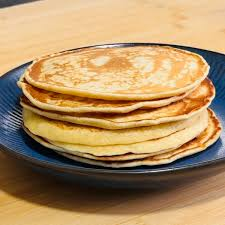

Fluffy Pancakes
Home

Pancakes are a classic, comforting breakfast food. This simple recipe creates thick, light, and fluffy pancakes with golden edges ready for syrup.
Ingredients
- Flour
- Baking Powder
- Sugar
- Milk
- Butter
- Egg
Steps
- Mix Dry: Whisk the flour, sugar, baking powder, and salt together in a bowl.
- Mix Wet: Whisk the milk, egg, and melted butter together in another bowl.
- Combine: Pour the wet ingredients into the dry bowl and stir gently until combined.
- Rest: Let the batter sit for 5 minutes while you heat up your frying pan.
- Pour: Scoop a small amount of batter onto a lightly greased hot pan.
- Flip: Cook until bubbles pop on top, then flip and cook the other side until golden.